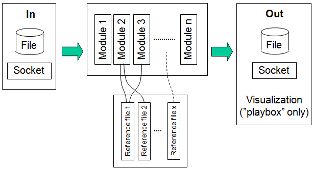

This section describes possible use cases for preprocessing in KORONA. The data flows through the KORONA modules in a sequence described in the module setup, and some processing modules use the content of a reference file as illustrated in the figure below. Several modules may use the same reference file. Note that the sequence of the processing modules may affect the result. For example, noise removal (NoiseRemovalModule) needs to be done after noise quantification (NoiseQuantificationModule). Further, the best data used to quantify noise is picked somewhat "below" the detected bottom (really: some time after bottom echo), so the Bottom detection module should be used before the NoiseQuantificationModule.

The processing modules can be grouped into 6 classes:
Example 1 - Data improvement.
Example 2 - Data reduction.
Example 3 - School detection.
Example 4 - Echo-trace detection.
Example 5 - Categorisation.
Example 6 - School categorisation.
Example 7 - Zooplankton size estimation.
Example 8 - Visualisation of intermediate results.
Example 9 - Colour scales.
Example 10 - Bottom detection.